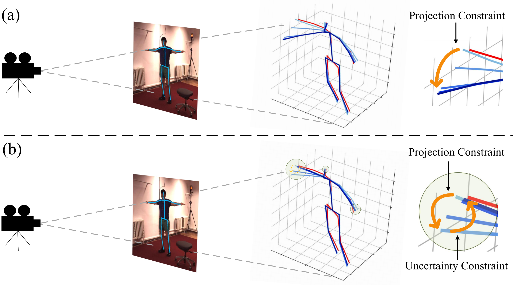
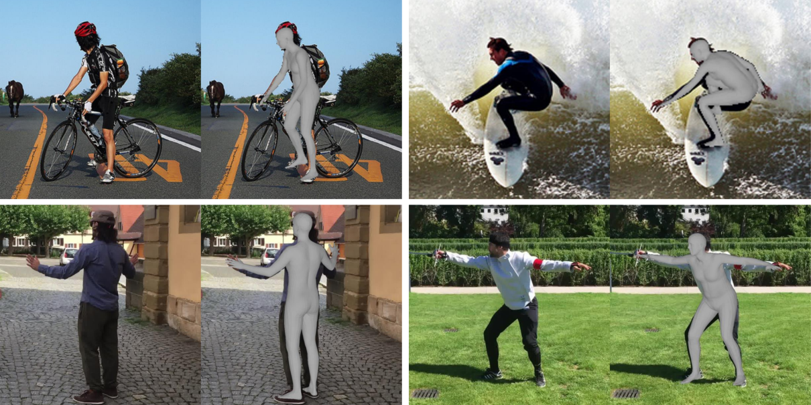
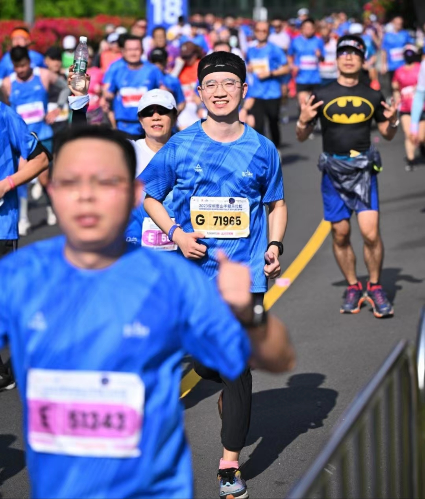
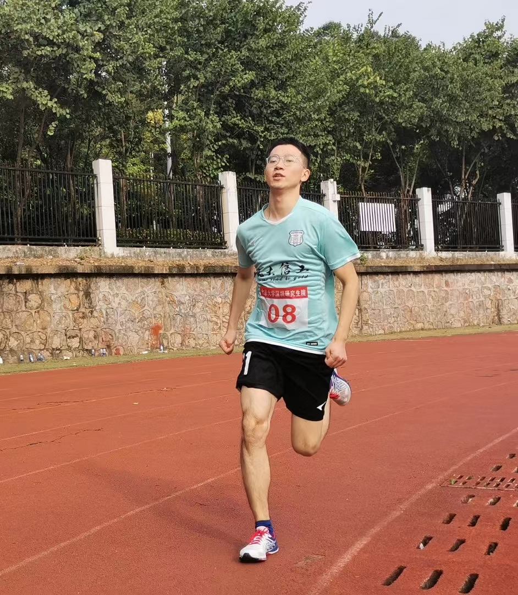
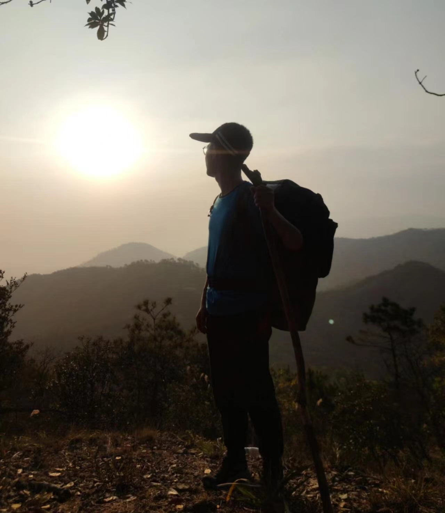

|
I am an incoming PhD student at the Mathis Laboratory of Adaptive Intelligence at EPFL, underline the supervision of Prof. Mackenzie Mathis. I will obtain my Master's degree from Peking University, China, in July 2024, under the supervision of Prof. Hong Liu and Prof. Mengyuan Liu. Additionally, I was a visiting student at the Multimedia and Human Understanding Group (MHUG), University of Trento, Italy, under the supervision of Prof. Nicu Sebe. I am also working closely with Xia Li from ETH Zurich. My current research interest focus on 3D human pose and shape estimation in images/videos using deep learning and optimization approaches. |
{kind=link}
Selected Publications |
|  |
Paper /
Cite /
Code
@article{wang2024uncertainty,
title={Uncertainty-Aware Testing-Time Optimization for 3D Human Pose Estimation},
author={Wang, Ti and Liu, Mengyuan and Liu, Hong and Ren, Bin and You, Yingxuan and Li, Wenhao and Sebe, Nicu and Li, Xia},
journal={arXiv preprint arXiv:2402.02339},
year={2024}
}
|
{kind=link}

|
Paper /
Cite /
Code
@inproceedings{wang2023interweaved,
title={Interweaved Graph and Attention Network for 3D Human Pose Estimation},
author={Wang, Ti and Liu, Hong and Ding, Runwei and Li, Wenhao and You, Yingxuan and Li, Xia},
booktitle={ICASSP 2023-2023 IEEE International Conference on Acoustics, Speech and Signal Processing (ICASSP)},
pages={1--5},
year={2023},
organization={IEEE}
}
|

|
Paper /
Cite /
Code
@inproceedings{you2023co,
title={Co-Evolution of Pose and Mesh for 3D Human Body Estimation from Video},
author={You, Yingxuan and Liu, Hong and Wang, Ti and Li, Wenhao and Ding, Runwei and Li, Xia},
booktitle={Proceedings of the IEEE/CVF International Conference on Computer Vision},
pages={14963--14973},
year={2023}}
|
|  |
Paper /
Cite /
Code
@inproceedings{you2023gator,
title={Gator: Graph-Aware Transformer with Motion-Disentangled Regression for Human Mesh Recovery from a 2D Pose},
author={You, Yingxuan and Liu, Hong and Li, Xia and Li, Wenhao and Wang, Ti and Ding, Runwei},
booktitle={Proceedings of the IEEE International Conference on Acoustics, Speech and Signal Processing (ICASSP)},
year={2023},}
|
{kind=link}
Review Services
|
Selected Awards and Honors
|
Hobbies
|
|



|